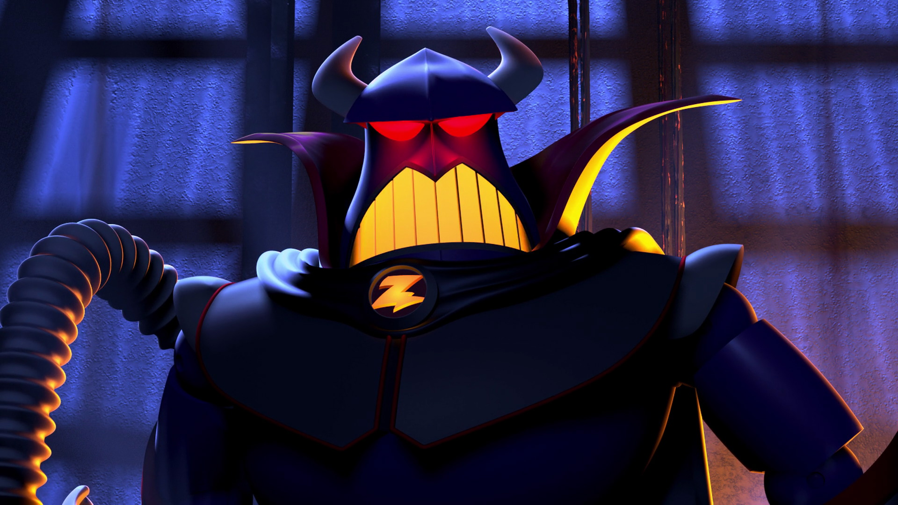

"Salutations! Je ne viens pas en paix! J'ai encerclé votre planète et capturé Buzz L'éclair pendant qu'il sort d'elle! Après que je finis avec Buzz, vous pouvez vous attendre à une destruition complète de la Tèrre! Muahahahah!!" - Zorg
"Bonjour mon cher centralien. Buzz et notre planète sont en danger encore une fois et c'est à vous pour les sauver! Si on peut reussir à hacker le système de controle de Zorg on peut donner Buzz une chance de le vaincre! Mais pour cela, vous avez besoin de resoudre 8 énigmes qui iront tester vos connaissances et inteligences. Vous devez utiliser votre navegateur et taper la reponse comme un link html du site. Par exemple: biyond.herokuapp.com/reponse.html. N'oubliez pas encore de soumettre votre coloc ou étage en haut a chaque fois que vous etes dans une nouvelle page. Le premier énigme est sur le link "/debut.html". Je fais confiance a vous. Bon courage!" - Debouck